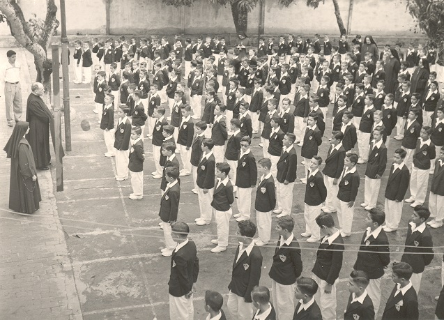

historia
Historia El colegio Félix de Jesús Rougier de Tampico fue fundado el 4 de octubre de 1941, por la Congregación de las Misioneras Eucarísticas de la Santísima Trinidad.
Historia El colegio Félix de Jesús Rougier de Tampico fue fundado el 4 de octubre de 1941, por la Congregación de las Misioneras Eucarísticas de la Santísima Trinidad.
>Después de 20 años de impartir educación exclusivamente a varones, en 1961 el Colegio recibe a sus primeras alumnas, de ahí en adelante la institución será mixta, esto con la finalidad de formar niños y niñas, para una sociedad donde hombres y mujeres se desarrollen con el mismo n ivel académico e igualdad de oportunidades.
Formar integralmente a hombres y mujeres, desde la identidad de las Misioneras Eucarísticas de la Santísima Trinidad, siendo, buscando y formando a los adoradores del Padre, en un ambiente de comunidad, donde descubran el Proyecto de Dios en sus vidas a través de la fe, la cultura, la educación y el compromiso social, contribuyendo en la transformación de una sociedad más justa, fraterna y solidaria.
Somos una Institución educativa católica que colabora en la formación integral de los alumnos, fomentando el desarrollo del pensamiento crítico y la conciencia ética, en un ambiente de comunidad, con actitud de alegría y gratitud que los haga sentirse hijos amados de Dios Padre, para contribuir a la transformación de una sociedad más justa, fraterna y solidaria.
